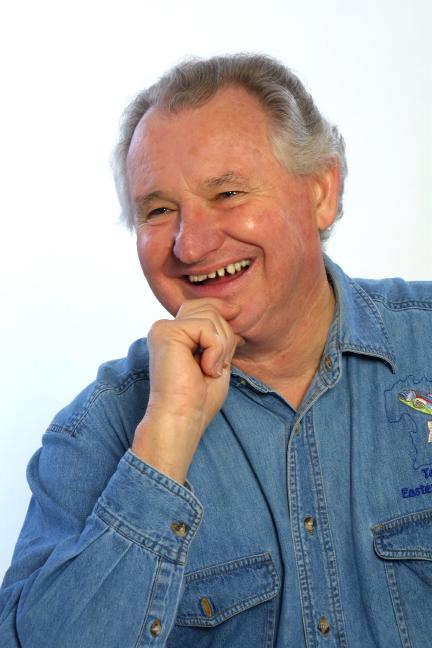

Brian Hotchkies
A Message From Brian
The two clubs which I run ("B-bar-H" & "Tumbi Country") are currently in recess for an indefinite period due to the current pandemic. The other two clubs for which I call ("Newport Ocean Waves" & "Classified A") are managed by Committees, and although the Club Committee will announce when those clubs will re-start, I imagine it will also be quite some time in the future.
I will miss everyone dearly, and I look forward to dancing with you all again, hopefully in the near future.
Stay safe, healthy and happy.
From Newcastle, Brian began his involvement with Square Dancing in 1961 when he went along to a local club "just to watch". From such small beginnings a remarkable talent has emerged.
Brian started calling with the Y.M.C.A. club in 1962 and since then has called for almost every Square Dance club in the Newcastle area. This has involved him in up to six functions each week.
The time and effort involved have paid off, as Brian is recognised as being among the top group of callers in Australia. He regularly calls for major functions throughout Australia and New Zealand. His enjoyment of what he is doing is so obvious in his calls that it is infectious.
Brian writes choreography for Square Dances, and records vocals for an American record company. Copies of these records are released world wide. He has his own small recording studio in which he produces master tapes for record and cassette production.
SQUARE DANCING is Brian's full time occupation, and he spends much of his time teaching people to dance. He has a full home programme in the Hunter region as well as his interstate and international engagements. Brian also conducts classes each year to teach the art and science of Calling. At the invitation of interstate Societies and Caller's Associations, he has conducted similar classes in most states of Australia, and in New Zealand.
Brian has had considerable experience teaching Square Dancing to people of all ages, including school children, and is always available to offer advice and assistance. For advice or bookings, please visit the "Contact Us" page.